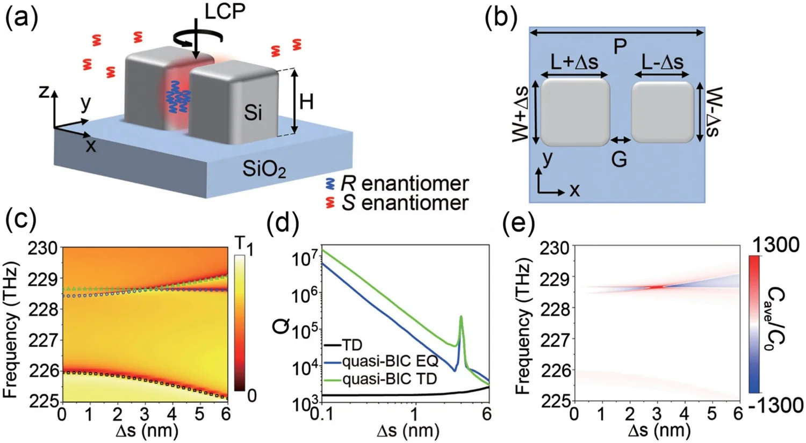
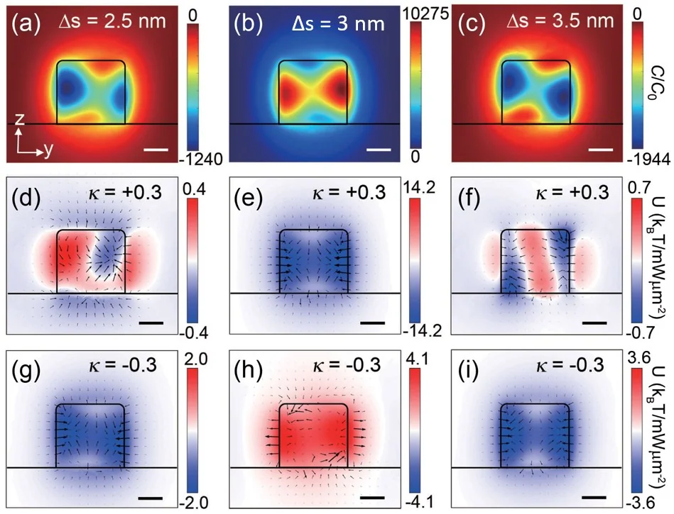
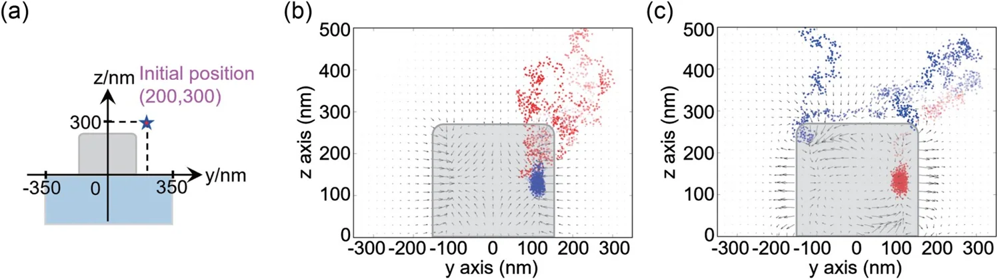

Enantioselective optical forces using quasi-BICs
KEY RESULTPredicted selective forces and chiral trapping in numerical models
In this work, asymmetric silicon dimers support coupled quasi-BIC resonances. Their optical near fields generate a pronounced chirality-dependent interaction, enabling distinct forces on opposite enantiomers.
The study models optical potentials and dynamics under viscous drag and Brownian fluctuations. These results are numerical predictions of chiral selective trapping rather than a completed experimental demonstration of single-molecule separation.


